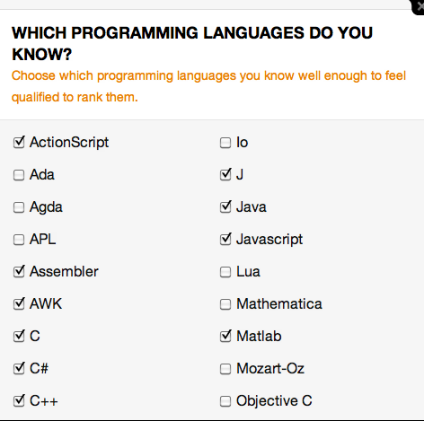
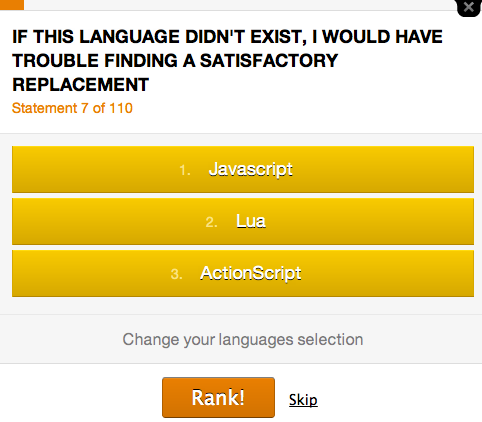
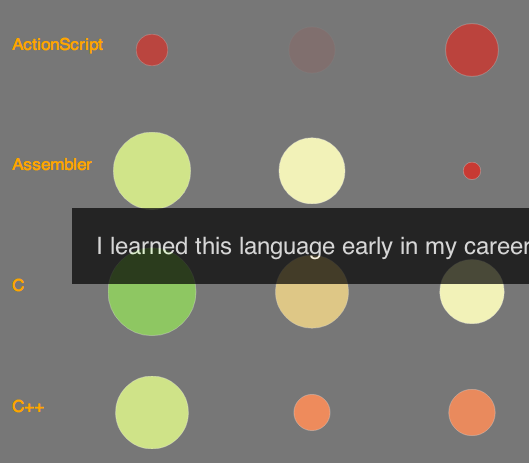
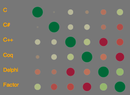
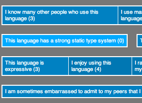

Socio-PLT: Sociological Programming Language Theory
Why does one language succeed and another one fail? To answer questions like this, we are examining sociological aspects of programming language theory: socio-PLT. This varies from establishing first principles (see our survey of sociological research) to building socially-optimized languages. The interactive visualizations here show some of our recent efforts for a quantitative analysis of programming language perceptions.
We're examining large-scale activity, and a lot of it:
 The visualizations on this site currently focus on the last data set. First, we computed how well a language matches a particular statement relative to other languages. From there, we correlated languages with each other and the same for statement correlations. This revealed pairwise relationships that were often surprising, such as that static types and code reuse do not mix well. Finally, to understand multiway relationships, we computed the k-means clusterings for languages and for statements. We explain all of these below, or you can follow the links in this paragraph to start exploring the data.
The visualizations on this site currently focus on the last data set. First, we computed how well a language matches a particular statement relative to other languages. From there, we correlated languages with each other and the same for statement correlations. This revealed pairwise relationships that were often surprising, such as that static types and code reuse do not mix well. Finally, to understand multiway relationships, we computed the k-means clusterings for languages and for statements. We explain all of these below, or you can follow the links in this paragraph to start exploring the data.
The Hammer Principle Survey
Respondents came in bursts from popular online sites such as Slashdot, Hacker News, and Reddit. They went through the following process:
Step 1:
Pick languages
Respondents picked a set of languages that they are comfortable out of a pool of 51. The average set had about 7 languages.

Step 2:
Rank languages by statement
Respondents were shown a series of statements. For each statement, a respondent ordered the previously selected languages based on how well they matched the statement. The average respondent answered 10-11 questions.

Over two years, 13,000 people filled out the survey. While individual responses are sparse and often contradictory, our statistical analysis revealed strong themes with high confidence.
Algorithm Step 1: Ranking with Glicko

Our first interactive visualization compares languages according to how well they match different statements about them. This provides a basic fingerprint for each language and reveals languages that rank similarly -- or fail to -- for certain properties.
Consider a respondent ranking a few languages for some statement X. The languages might be given order A > B > C. We treat this as the outcome of 3 different matches between players A, B, and C in sport X, where A > B, A > C, B > C. While respondents only looked at 140,000 statements, these sequences expand into 4 million pairwise comparisons!
For a given statement X, globally ordering the languages is difficult. There is no logically consistent ordering -- one respondent may rank A > B and another B > A. Worse, the data is sparse for unpopular languages.
The Glicko 2 ranking algorithm is designed for this scenario. You may have seen it in sports: Glicko generalizes the old Elo rating system.
You may even have your own Glicko rank because a variant drives XBox's TrueSkill online player rankings.
Glicko is a simulation. A weak language beating a strong language gives the weak one a big boost in score and the strong one a drop, while there is little change in ranks from a strong language beating a weak one.
Time and contention is factored in by tracking the deviation across matches: an occasional upset is disregarded (such as from spam bots and zealots), but if the upsets become consistent (e.g., a language was upgraded), the rank will converge on the new value. Likewise, high disagreement about a statement is reflected by a high deviation.
Algorithm Step 2: Correlation and Clustering
Finally, we looked more closely for correlations. We did this in two ways:

1. We computed the statement correlation matrix. This tells us, for any two given statements, whether they have a linear relationship across the different languages. For example, we found that programmers perceive that static type systems strongly anti-correlate with code reuse. We also computed the language correlation matrix, which reveals languages that are similar and opposite.

2. We computed the k-means clustering to showcase relationships across multiple items rather than just between pairs. For a desired number of k groups, it will partition the data in a way that minimizes the average distance a node is from the center of its group. We clustered both languages and statements for different values of k. This reveals strong themes and, in some cases, items that are tough to pin down.